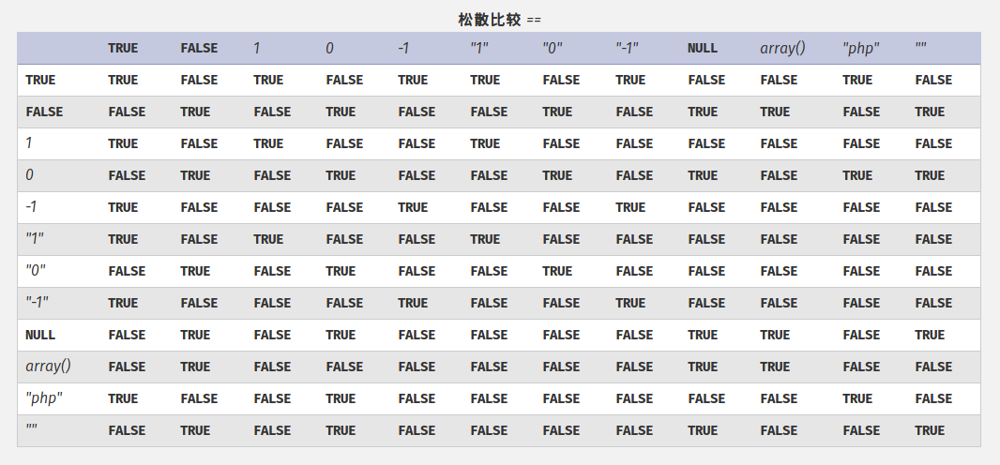

PHP相关¶
php是最好的语言！
PHP弱类型¶

var_dump('0xABCdef' == ' 0xABCdef');- true (Output for hhvm-3.18.5 - 3.22.0, 7.0.0 - 7.2.0rc4: false)
var_dump('0010e2' == '1e3’);- true
strcmp([],[])- 0
sha1([])- NULL
'123' == 123'abc' == 0'0x01' == 1- PHP 7.0后，16位字符串不在当成数字（
'0x01 != 1'）
- PHP 7.0后，16位字符串不在当成数字（
0 == '' == false == NULL$a = 'a'++$a=>'b'$a+1=> 1
PHP 全局变量¶
$_GET会对传入的数据进行URLdecode$_SERVER['REQUEST_URI']和$_SERVER['QUERY_STRING']则是直接返回
PHP函数特性¶
intval¶
- 四舍五入(不存在的截断)
var_dump(intval('5278.78'))=> 5278
intval(012)=> 10intval("012")=> 12
extract¶
int extract ( array &$array [, int $flags = EXTR_OVERWRITE [, string $prefix = NULL ]] )
提取出数组中的键值，覆盖进变量
.php?_SESSION[name]=admin将admin覆盖入session
trim¶
string trim ( string $str [, string $character_mask = " \t\n\r\0\x0B" ] )
- 去掉字符串前后空白字符
- 默认去掉以下字符
" "(0x20)"\t"(0x09)"\n"(0x0A)"\x0B"(0x0B)"\r"(0x0D)"\0"(0x00)
- 可以默认不包含
"\f"(0x0C)- 比较：is_numeric()允许
\f在开头
- 比较：is_numeric()允许
in_array¶
bool in_array ( mixed $needle , array $haystack [, bool $strict = FALSE ] )
- 默认使用松散比较
- 判断值是否在数组中而不是键是否在数组中
array_search¶
mixed array_search(mixed $needle , array $haystack [, bool $strict = false ])
与in_array类似，成功返回index，失败返回FALSE
parse_str¶
void parse_str ( string $encoded_string [, array &$result ] )
- 变量覆盖，与extract类似，传入的是urlencode过的字符串，传入指定数组，指定数组未设置，会覆盖全局变量
- 变量名中有
（空格）或.（点），会被替换成_（下划线）
parse_url¶
- 在处理URL时会有问题
-
parse_url('/a.php?id=1')-array(2) { ["host"]=> string(5) "a.php" ["query"]=> string(4) "id=1" }parse_url('//a/b')- host:
a parse_url('..//a/b/c:80')- host:
.. - port:
80 - path:
//a/b/c:80 -
parse_url('///a.php?id=1') -
false
- host:
-
parse_url('/a.php?id=1:80')-
PHP < 7.0.0
false- PHP >= 7.0.0
array(2) { ["path"]=> string(6) "/a.php" ["query"]=> string(7) "id=1:80" }
- PHP >= 7.0.0
-
-
parse_url('http://kaibro.tw:87878')- 5.3.X版本以下
array(3) { ["scheme"]=> string(4) "http" ["host"]=> string(9) "kaibro.tw" ["port"]=> int(22342) }
- 其他： false
- 5.3.X版本以下
preg_replace¶
mixed preg_replace ( mixed $pattern , mixed $replacement , mixed $subject [, int $limit = -1 [, int &$count ]] )- 搜寻
$subject中匹配的$pattern，并用$replacement替换
- 搜寻
- 第一个参数用
/e修饰符，$replacement会被当成PHP code执行- 必须有匹配到才会执行
- PHP 5.5.0起，會產生
E_DEPRECATED错误 - PHP 7.0.0不再支援，用
preg_replace_callback()代替
example:
<?php $a='phpkaibro'; echo preg_replace('/(.*)kaibro/e','\\1info()',$a);
sprintf/vprintf¶
打印格式：
%标志这一个格式化位置的起点[num]$选择第[num]个参数+或-强制显示符号（默认显示负号，忽略正号）(可选)0或'[char]以0或者[char]作为填充字符，默认为空格（可选）- 数字，规定打印宽度（可选）
.[num]指定数字打印精度；如果是字符串，设置最大打印长度- 打印类型
%转义的%b将整数打印为二进制c将整数打印成ASCII对应的字符d将整数打印成有符号十进制数e将数字打印科学计数法(1.2e+2)E同上(1.2E+2)f将浮点数打印为浮点数g%e的简短版本G%E的简短版本o将整数打印为八进制u将整数打印为无符号十进制整数x将整数打印为十六进制数（小写）X将整数打印为十六进制数（大写）
可能利用的特性：
- 如果存在上述格式化字符中不存在的字符则忽略不处理
addslashes¶
过滤的字符：
- NULL (0x0)
"(0x22)'(0x27)\(0x5c)
file_put_contents¶
int file_put_contents ( string $filename , mixed $data [, int $flags = 0 [, resource $context ]] )
可以写入数组，绕过字符串过滤的限制
spl_autoload_register¶
不指定参数会自动载入目录下.inc和.php中的class
create_function¶
string create_function ( string $args , string $code )
demo:
$fun = create_function('$a', 'return $a + 1;'); $fun(1);
PHP shell相关¶
exec¶
string exec ( string $command [, array &$output [, int &$return_var ]] )
执行$command，返回执行结果的最后一行。把全部结果作为数组存在$output，把返回值存到$return_val中。
paththru¶
void passthru ( string $command [, int &$return_var ] )
执行$command， 打印原始结果
system¶
string system ( string $command [, int &$return_var ] )
执行$command， 打印结果
成功则返回命令输出的最后一行，失败则返回 FALSE
shell_exec¶
string shell_exec ( string $cmd )
执行$cmd返回输出字符串
$rt_val = `ls -a`; //效果相同
escapeshellarg¶
string escapeshellarg ( string $arg )
把$arg安排上单引号
escapeshellcmd¶
string escapeshellcmd ( string $command )
转义下列字符：
\n0xa#0x23$0x24&0x26(0x28)0x29*0x2a;0x3b<0x3c>0x3e?0x3f[0x5b\0x5c]0x5d^0x5e`0x60{0x7b|0x7c}0x7d~0x7e
如果"，'不成对，也会对其转义